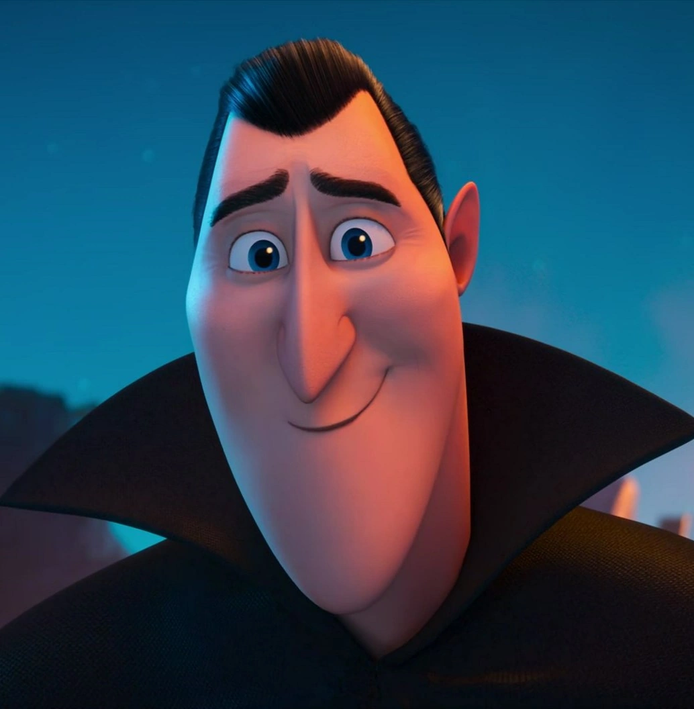

© Sony Picturesreference
Count Dracula
In the Hotel Transylvania universe, the character's full name is officially Count Dracula (commonly nicknamed Drac). The franchise does not give him a separate human first name, but his character profile reveals that his full birth name is Count Dracula Vladislav (or Count Dracula of Transylvania), with "Dracula" serving as his family's surname.